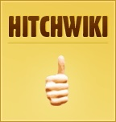
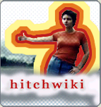
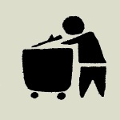
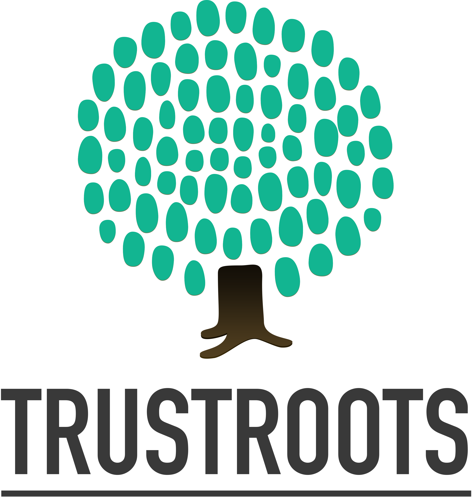
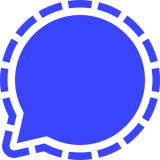

We're a bunch of hitchhiking geeks who love building moneyless FOSS projects that help create real life interaction.

Hitchwiki mapsFind and share places to hitch a ride.
HitchwikiPractical ridesharing knowledge since 2005.
TrashwikiFreegan and low-impact travel since 2008.
TrustrootsA community for sharing hospitality since 2014.
Hitchwiki Signal chatJoin the Hitchwiki community on Signal.- Hitchwiki EuropeTurning 18? Apply for your free Discover Europe hitchhiking pass.
- Hitchwiki dumpsDownload Hitchwiki data and archives.
- Digihitch archiveExplore the restored parts of Digihitch.
- Random RoadsAn independent travel magazine from 2009–2015. New articles are very welcome!
Works in progress
Experiments
New ways for hitchhikers to meet, share and travel together.
- Hitchhiking chat ExperimentalPasswordless Matrix chat using a verified Hitchwiki or Trustroots Nostr identity.
- Hitchhiking forum ExperimentalQuestions, stories and conversations from the road. Established in 2026.
- Rideshares.org ExperimentalA Nostr-based ridesharing application, launched in 2025.